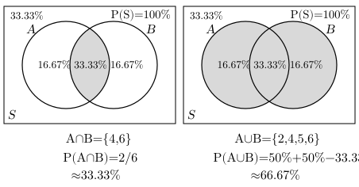
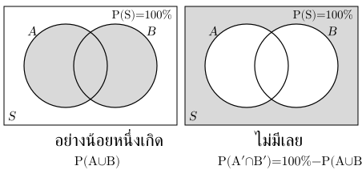

. การทดลองสุ่ม ปริภูมิตัวอย่าง และเหตุการณ์
การทดลองสุ่มบอกผลแน่นอนล่วงหน้าไม่ได้ แต่ระบุผลที่เป็นไปได้ เช่น ทอดลูกเต๋าครั้งเดียว
บทนิยาม: ปริภูมิตัวอย่าง คือเซตของผลลัพธ์ที่เป็นไปได้ทั้งหมด ส่วนเหตุการณ์ คือเซตของผลลัพธ์ที่ตรงเงื่อนไขที่สนใจ โดย
เช่น ทอดลูกเต๋าหนึ่งลูกหนึ่งครั้ง มี เหตุการณ์ได้แต้มคู่คือ เหตุการณ์ไม่ได้เป็นผลลัพธ์เดียวเสมอไป
ถ้าทดลองหลายครั้ง ให้ระบุว่าตำแหน่งใดแทนครั้งใด เช่น โยนเหรียญสองครั้งมี หัว–หัว, หัว–ก้อย, ก้อย–หัว, ก้อย–ก้อย โดยหัว–ก้อยต่างจากก้อย–หัว
ระวัง: “ได้หัวหนึ่งครั้ง” อาจเกิดได้สองลำดับ ไม่ควรรวมเป็นหนึ่งผลลัพธ์แล้วถือว่ามีโอกาสเท่ากับหัวสองครั้ง
. ความน่าจะเป็นกับการนับ
เมื่อ เป็นเซตจำกัด ไม่ว่าง และ ผลลัพธ์แต่ละแบบใน มีโอกาสเกิดเท่ากัน จะหาได้จาก
เช่น ลูกเต๋าเที่ยงตรงมีแต้มคู่ แบบจากทั้งหมด แบบ จึง
ใช้หลักการนับหา และ โดยนับผลลัพธ์ชนิดเดียวกัน เช่น ถ้า นับเป็นลำดับการหยิบ ก็ต้องนับเป็นลำดับการหยิบ
ผลลัพธ์โอกาสไม่เท่ากัน → รวมโอกาสของผลลัพธ์ใน ไม่ใช้จำนวนกรณีหารทั้งหมดตรง ๆ
สมบัติพื้นฐาน: , และ
ระวัง: คำว่า “สุ่ม” ไม่พอจะทำให้ทุกผลลัพธ์ที่เราจัดกลุ่มไว้มีโอกาสเท่ากัน ต้องดูวิธีสุ่มและนิยามหนึ่งผลลัพธ์ด้วย
. ส่วนเติมเต็ม การรวม และการเกิดร่วม
| เหตุการณ์ | ความหมาย |
|---|---|
| ไม่เกิด: ผลลัพธ์ใน ที่ไม่อยู่ใน | |
| หรือ เกิด รวมกรณีเกิดทั้งสองด้วย | |
| และ เกิดพร้อมกัน |
สมบัติ: และ
สูตรรวมลบส่วนร่วม เพราะบวก แล้วนับส่วนที่เกิดทั้งสองซ้ำ
ถ้า กับ ไม่เกิดร่วมกัน หรือ จะมี จึง
เช่น ลูกเต๋าเที่ยงตรง ให้ เป็นแต้มคู่ และ เป็นแต้มมากกว่า จะมี , จึง และ ดังนั้น

ระวัง: คำว่า “หรือ” ใน รวมการเกิดทั้งสองด้วย ถ้าถาม “เพียงเหตุการณ์เดียว” ต้องตัดส่วนร่วมออกจากทั้งสองฝั่ง
. ใช้หลักการนับหาความน่าจะเป็นของการหยิบ
สุ่มหยิบพร้อมกัน ลูกจากถุงที่มีแดง ลูก น้ำเงิน ลูก โดยแต่ละคู่มีโอกาสถูกเลือกเท่ากัน ให้ติดป้ายลูกบอลเป็น แดง₁, แดง₂, น้ำเงิน₁ เพื่อแยกลูกที่สีเหมือนกันออกจากกัน
คู่ที่เป็นไปได้มี คู่: {แดง₁,แดง₂}, {แดง₁,น้ำเงิน₁}, {แดง₂,น้ำเงิน₁} มีเพียงคู่แรกที่แดงทั้งสอง จึงมีโอกาส
ใช้สูตรเลือกได้เช่นกัน: ทั้งหมด คู่ และเลือกแดงสองลูก คู่ จึง
ระวัง: คู่สี “แดง–แดง” กับ “แดง–น้ำเงิน” ไม่ได้มีโอกาสเท่ากัน คู่แดง–น้ำเงินเกิดจากคู่ลูกบอลสองคู่ จึงไม่ควรนับเป็นสองกรณีแล้วตอบ
. แนวที่เลือกฝึก: อย่างน้อยหนึ่ง ใช้ส่วนเติมเต็ม
“อย่างน้อยหนึ่ง” รวมหนึ่ง สอง และมากกว่านั้น ถ้าแยกหลายกรณีให้คิดตรงข้ามคือ ไม่มีเลย
เช่น โยนเหรียญสองครั้ง โดยหัว–หัว, หัว–ก้อย, ก้อย–หัว, ก้อย–ก้อยมีโอกาสเท่ากัน การไม่มีหัวมีเพียงก้อย–ก้อยหนึ่งแบบจากสี่แบบ จึงมีโอกาส ดังนั้นได้หัวอย่างน้อยหนึ่งครั้ง
เหตุการณ์ตรงข้ามของ “อย่างน้อยหนึ่งใน เกิด” คือ “ และ ไม่เกิดทั้งคู่” จึง

ตัวอย่าง ถุงมีลูกบอลแดง ลูก น้ำเงิน ลูก สุ่มหยิบพร้อมกัน ลูก โดยแต่ละคู่มีโอกาสเท่ากัน:
- ทั้งหมด คู่
- ไม่มีแดงเลย คือเลือกน้ำเงินสองลูก มี คู่
- โอกาสมีแดงอย่างน้อยหนึ่งลูก
ตรวจด้วยการนับตรง: แดงหนึ่งลูกพอดีมี คู่ และแดงสองลูกมี คู่ รวม คู่จากทั้งหมด คู่ จึงได้ เช่นกัน ส่วนโอกาสแดงหนึ่งลูกพอดีคือ ซึ่งต่างจากอย่างน้อยหนึ่งลูก
วิธีเริ่มโจทย์: ระบุว่า “หนึ่ง” นับอะไร → เขียนเหตุการณ์ตรงข้ามเป็นคำ → นับกรณีของเหตุการณ์ตรงข้ามเทียบทั้งหมด → ลบออกจาก → ตรวจว่าครอบคลุมจำนวนครั้งที่โจทย์ถาม
ระวัง: ส่วนตรงข้ามของ “อย่างน้อยหนึ่ง” คือศูนย์ ไม่ใช่ “ไม่เกินหนึ่ง” ซึ่งรวมทั้งศูนย์และหนึ่ง ให้นับผลลัพธ์ที่ตรงเหตุการณ์นั้นก่อน ไม่คูณโอกาสแยกกันแทนการนับ